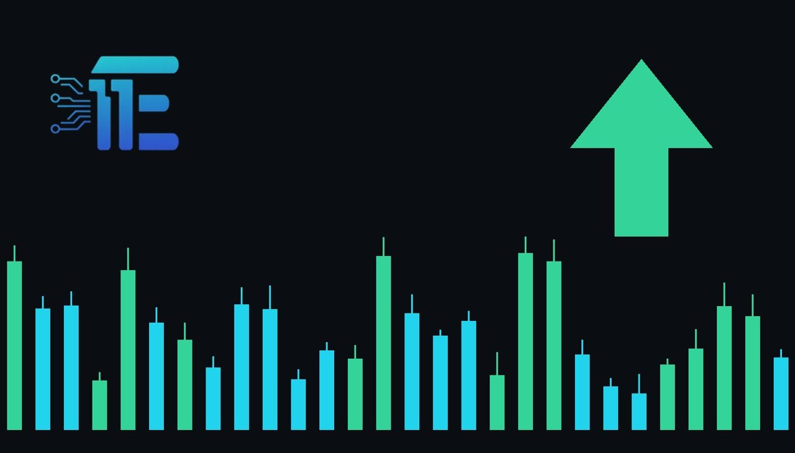

Ukraine Strikes Russian Warship in Libya, Escalating Global Tensionsអ៊ុយក្រែនវាយប្រហារនាវាចម្បាំងរុស្ស៊ីនៅលីប៊ី បង្កើនភាពតានតឹងភូមិសាស្ត្រនយោបាយ
XAU/USD impact: ▲ Bullishផលប៉ះពាល់លើ XAU/USD: ▲ ឡើង

Ukraine sinks a Russian battleship at a port in Libya, raising the geopolitical stakes. This geopolitical escalation drives safe-haven demand for gold.
អ៊ុយក្រែនបានលិចនាវាចម្បាំងរុស្ស៊ីមួយគ្រឿងនៅកំពង់ផែប្រទេសលីប៊ី ដោយបង្កើនកម្រិតជម្លោះភូមិសាស្ត្រនយោបាយ។ ការវិវត្តនេះជំរុញឱ្យមានតម្រូវការទ្រព្យសុវត្ថិភាពសម្រាប់មាស។
Ukraine has sunk a Russian battleship at a port in Libya, marking a notable expansion of the ongoing conflict into North African waters. This military action significantly raises the stakes and widens the geographical footprint of the war between Ukraine and Russia.
អ៊ុយក្រែនបានវាយប្រហារនិងលិចនាវាចម្បាំងរុស្ស៊ីមួយគ្រឿងនៅកំពង់ផែប្រទេសលីប៊ី ដែលជាសញ្ញាបញ្ជាក់ពីការពង្រីកវិសាលភាពនៃជម្លោះចូលទៅក្នុងដែនទឹកអាហ្វ្រិកខាងជើង។ សកម្មភាពយោធានេះបានលើកកម្ពស់កម្រិតភាពតានតឹង និងពង្រីកវិសាលភាពនៃសង្គ្រាមរវាងអ៊ុយក្រែននិងរុស្ស៊ីយ៉ាងខ្លាំង។
For XAU/USD traders, geopolitical developments of this magnitude serve as a primary transmission channel through safe-haven demand. When international conflicts escalate and spread to new regions, investors frequently seek protection in safe-haven assets like physical gold, bypassing riskier equity and currency markets.
សម្រាប់អ្នកជួញដូរ XAU/USD ព្រឹត្តិការណ៍ភូមិសាស្ត្រនយោបាយកម្រិតនេះគឺជាបណ្តាញបញ្ជូនផលប៉ះពាល់ដ៏សំខាន់តាមរយៈតម្រូវការទ្រព្យសុវត្ថិភាព។ នៅពេលដែលជម្លោះអន្តរជាតិមានការកើនឡើង និងរាលដាលដល់តំបន់ថ្មីៗ អ្នកវិនិយោគតែងតែស្វែងរកការការពារនៅក្នុងទ្រព្យសុវត្ថិភាពដូចជាមាស ដោយចាកចេញពីទីផ្សារភាគហ៊ុននិងរូបិយប័ណ្ណដែលមានហានិភ័យខ្ពស់។
Looking at potential market scenarios, a sustained escalation in geopolitical tensions or threats to global stability would typically support higher gold prices by boosting safe-haven demand. Conversely, if diplomatic efforts quickly de-escalate the situation or if market focus shifts back to macroeconomic factors like US interest rates and dollar strength, any safe-haven gains in gold could face selling pressure.
ប្រសិនបើពិចារណាលើសេណារីយ៉ូទីផ្សារ ការកើនឡើងជាបន្តបន្ទាប់នៃភាពតានតឹងភូមិសាស្ត្រនយោបាយ ឬការគំរាមកំហែងដល់ស្ថិរភាពសកល ಸಾಮಾನ್ಯವಾಗಿគាំទ្រតម្លៃមាសតាមរយៈការកើនឡើងនៃតម្រូវការទ្រព្យសុវត្ថិភាព។ ផ្ទុយទៅវិញ ប្រសិនបើកិច្ចខិតខំប្រឹងប្រែងការទូតអាចកាត់បន្ថយភាពតានតឹងបានយ៉ាងឆាប់រហ័ស ឬប្រសិនបើទីផ្សារបង្វែរការចាប់អារម្មណ៍ទៅលើកត្តាម៉ាក្រូសេដ្ឋកិច្ចដូចជាអត្រាការប្រាក់នៅសហរដ្ឋអាមេរិកនិងកម្លាំងដុល្លារអាមេរិក ការឡើងថ្លៃរបស់មាសអាចនឹងត្រូវទទួលសម្ពាធលក់វិញ។
Market participants should monitor subsequent diplomatic developments, official statements from international governments, and any further military engagements involving Russian assets abroad. Tracking these geopolitical shifts remains essential for assessing immediate safe-haven flows into XAU/USD.
អ្នកចូលរួមទីផ្សារគួរតែតាមដានការវិវត្តផ្នែកការទូតបន្តបន្ទាប់ សេចក្តីប្រកាសផ្លូវការពីសំណាក់រដ្ឋាភិបាលអន្តរជាតិ និងរាល់សកម្មភាពយោធាបន្ថែមទៀតដែលពាក់ព័ន្ធនឹងទ្រព្យសម្បត្តិរុស្ស៊ីនៅក្រៅប្រទេស។ ការតាមដានការប្រែប្រួលភូមិសាស្ត្រនយោបាយទាំងនេះនៅតែមានសារៈសំខាន់សម្រាប់ការវាយតម្លៃលំហូរទ្រព្យសុវត្ថិភាពចូលទៅក្នុង XAU/USD ភ្លាមៗ។
Key takeawaysចំណុចសំខាន់ៗ
- Ukraine sank a Russian battleship at a port in Libya, expanding the geographic scope of the conflict.
- អ៊ុយក្រែនបានលិចនាវាចម្បាំងរុស្ស៊ីនៅកំពង់ផែលីប៊ី ដែលពង្រីកវិសាលភាពភូមិសាស្ត្រនៃជម្លោះ។
- Geopolitical escalations heighten safe-haven demand, which acts as a key support driver for gold.
- ការកើនឡើងនៃភាពតានតឹងភូមិសាស្ត្រនយោបាយជំរុញតម្រូវការទ្រព្យសុវត្ថិភាព ដែលជាកត្តាគាំទ្រយ៉ាងសំខាន់សម្រាប់មាស។
- Traders should closely monitor further military updates and international diplomatic responses for shifts in safe-haven sentiment.
- អ្នកជួញដូរគួរតែតាមដានព័ត៌មានយោធាបន្ថែម និងប្រតិកម្មការទូតអន្តរជាតិសម្រាប់ទិសដៅសុវត្ថិភាពទីផ្សារ។
Original commentary by THE MARKET CODE, based on public reporting from BBC News. Written with the help of AI. Educational only, not financial advice.
មតិវិភាគដើមដោយ THE MARKET CODE ផ្អែកលើការរាយការណ៍សាធារណៈពី BBC News។ សរសេរដោយមានជំនួយពី AI។ មាតិកាអប់រំប៉ុណ្ណោះ មិនមែនជាដំបូន្មានហិរញ្ញវត្ថុទេ។